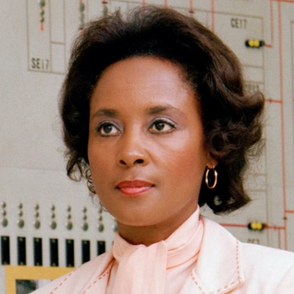
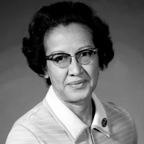

Bibliography of Annie Easley
September 29, 2023 by Olina Marie

Annie Easley, born in 1933 in Birmingham, Alabama, and passing away in 2011, initially pursued a pharmacy major at Xavier University for approximately two years. After completing her education, she met her husband, and they relocated to Cleveland. It was in Cleveland that her life took a pivotal turn. Unable to find a nearby pharmaceutical school, she applied for a position at the National Advisory Committee for Aeronautics (NACA), which later became NASA. Within two weeks, she began her employment at NACA. She was among the few African Americans working there and played a pivotal role in developing and implementing code that contributed to the creation of batteries used in hybrid cars. Annie Easley is widely recognized for her significant impact on technology and her advocacy for women and people of color to enter STEM fields.
Easley's strong foundation was laid by her single mother, who instilled in her the belief that hard work could lead to achievement. Even before the civil rights reforms of the 1960s, she actively engaged in training African Americans in her home state of Alabama to overcome voting tests. Beyond her groundbreaking work at NASA, Easley also showcased her versatility by co-founding the NASA Lewis Ski Club and serving a term as its president, all while taking up skiing at the age of 46. She explored various skiing destinations, including Colorado, Canada, and Europe. Annie Easley's life is a testament to her multifaceted achievements and her role in breaking barriers throughout her career.
Bibliography of Katherine Johnson
September 30, 2023 by Olina Marie

Katherine Johnson, born in 1918 in West Virginia and passing away in 2020 in Virginia, had a remarkable life and career. She was one of three Black students to attend West Virginia's graduate college and graduated in 1937 with a B.S. in Mathematics and French from the State School. Later in life, she learned of job opportunities at the all-Black computing section at the National Advisory Committee of Aeronautics (NACA) laboratory after getting married and starting a family. Notably, the launch of the Soviet satellite Sputnik altered the course of history and marked a pivotal moment in Katherine Johnson's life. She was responsible for manually running the same equations through her desktop computer that the machine used to ensure the safety of spaceflight. The success of this mission was critical, as the lives of astronauts depended on her work, and the signal from her calculations determined whether the launch proceeded. This achievement was a turning point in the competition between the United States a nd the Soviet Union in space exploration. Katherine Johnson is renowned for this pivotal event and her co-authorship of 26 research reports containing crucial mathematical equations for machines.
In 1952, at the age of 34, Katherine Johnson discovered job opportunities for Black women with mathematical and computing skills at the Langley laboratory of the National Advisory Committee for Aeronautics, which would later evolve into NASA. She and her fellow women colleagues served as "human computers," tackling complex calculations necessary for spaceflight. During her tenure, she shattered racial barriers, including the use of segregated facilities, like the restroom designated for white women.